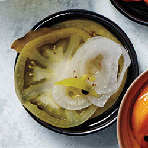
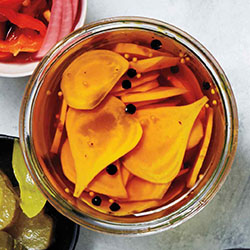

BrineBuddy's Most Popular Pickle Recipes



Combine vinegar, 3/4 cup water, sugar, spices, and 2 tablespoons salt in a saucepan. Bring to a boil, stirring until sugar is dissolved. Fill clean containers tightly with tomatoes and onion. Add boiling brine to cover completely.
1 1/2 cups distilled white vinegar or apple-cider vinegar
2 teaspoons sugar
1/2 teaspoon whole black peppercorns
1/2 teaspoon coriander seeds
3 whole allspice berries
2 dried bay leaves
Coarse salt
4 small green tomatoes (1 pound), cut into 1/4-inch slices
6 thin slices white onion
source: marthastewart.com
Combine vinegar, sugar, peppercorns, cloves, peppers, bay leaf, and lemon rind in a medium saucepan. Bring to a boil over high heat; boil 2 minutes more. Add garlic; boil 4 minutes. Remove from heat; cover, and let sit overnight in refrigerator. Garlic may be canned, placed in a sterilized jar, or stored in the refrigerator in an airtight container up to 1 month.
6 heads garlic
4 cups white-wine vinegar
4 tablespoons sugar
1 teaspoon whole black peppercorns
4 whole cloves
2 small dried chile peppers
1 dried bay leaf
Rind of 1 lemon
source: marthastewart.com
Combine vinegar, sugar, spices, and 2 tablespoons salt in a saucepan. Bring to a boil, stirring until sugar is dissolved. Fill clean containers tightly with beets. Add boiling brine to cover completely. Let cool completely.
1 1/2 cups distilled white vinegar or apple-cider vinegar
1 1/4 cups sugar
1/2 teaspoon mustard seeds
1/2 teaspoon whole black peppercorns
1/4 teaspoon celery seeds
1/4 teaspoon celery seeds
Coarse salt
16 ounces Kirby cucumbers, trimmed and cut into 1-inch rounds
1/2 small white onion, cut into 1/4-inch wedges
source: marthastewart.com



Combine vinegar, sugar, spices, and 2 tablespoons salt in a saucepan. Bring to a boil, stirring until sugar is dissolved. Fill clean containers tightly with beets. Add boiling brine to cover completely. Let cool completely.
1 1/2 cups distilled white vinegar or apple-cider vinegar
1 1/4 cups sugar
1/2 teaspoon mustard seeds
1/2 teaspoon whole black peppercorns
1/4 teaspoon celery seeds
1/4 teaspoon turmeric
Coarse salt
12 ounces peeled and very thinly sliced golden beets (about 16)
source: marthastewart.com
Combine vinegar, 3/4 cup water, sugar, spices, and 2 tablespoons salt in a saucepan. Bring to a boil, stirring until sugar is dissolved. Fill clean containers tightly with vegetables. Add boiling brine to cover completely. Let cool completely.
1 1/2 cups distilled white vinegar or apple-cider vinegar
2 teaspoons sugar
1/2 teaspoon whole black peppercorns
1/2 teaspoon coriander seeds
3 whole allspice berries
2 dried bay leaves
Coarse salt
2 small red onions (8 ounces), cut into rings
8 baby bell peppers (8 ounces), cut into rings
1 small jalapeno, cut into rings
source: marthastewart.com
Combine vinegar, sugar, spices, and 2 tablespoons salt in a saucepan. Bring to a boil, stirring until sugar is dissolved. Fill clean containers tightly. Add boiling brine to cover completely. Let cool completely.
3 tablespoons whole black peppercorns
3 tablespoons yellow mustard seeds
4 teaspoons allspice
1 cinnamon stick, crumbled
3 3/4 pounds Kirby cucumbers, scrubbed
1/2 cup Kosher salt or 1/3 cup pickling salt, plus coarse salt for pickling liquid
2 1/2 cups distilled white or apple cider vinegar
2 1/2 cups water
2 tablespoons pickling spice (ingredients above or store-bought)
Dill and garlic (optional)
source: marthastewart.com